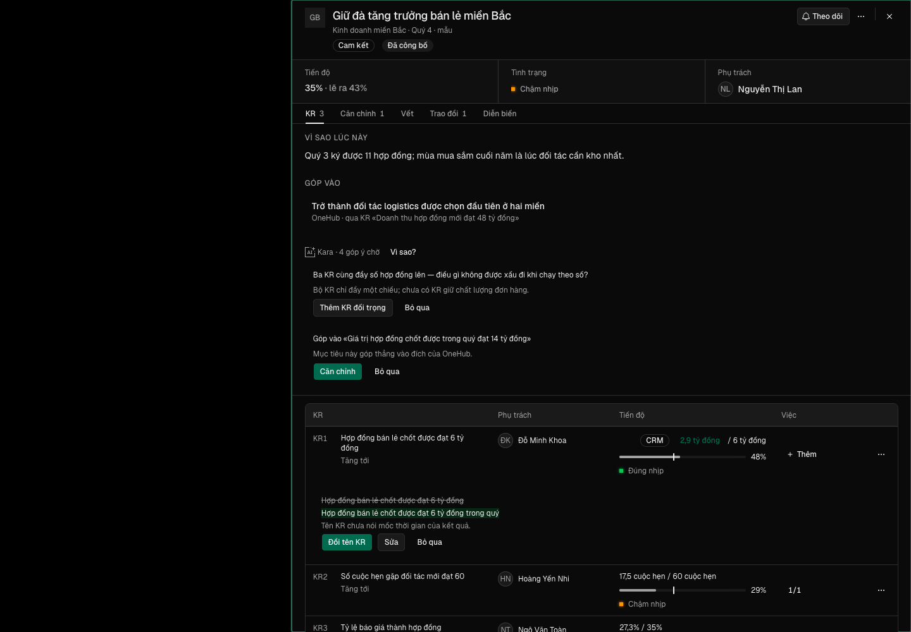

| Eval | Tiêu chí | Loại | Verdict | run_id | verified_at |
|---|---|---|---|---|---|
| E1 | AC-1 | test | PASS | minted-kara-gop-y-luot-2-E1-r1 | 2026-10-09T12:27:10Z |
| E2 | AC-2 | test | PASS | minted-kara-gop-y-luot-2-E2-r1 | 2026-10-09T12:27:10Z |
| E3 | AC-3 | test | PASS | "" | 2026-10-09T12:27:10Z |
| E4 | AC-4 | test | PASS | minted-kara-gop-y-luot-2-E4-r1 | 2026-10-09T12:27:10Z |
| E5 | AC-5 | test | PASS | minted-kara-gop-y-luot-2-E5-r1 | 2026-10-09T12:27:10Z |
| E6 | AC-6 | test | PASS | minted-kara-gop-y-luot-2-E6-r1 | 2026-10-09T12:27:10Z |
| E7 | AC-7 | test | PASS | minted-kara-gop-y-luot-2-E7-r1 | 2026-10-09T12:27:10Z |
| E8 | AC-8 | test | PASS | minted-kara-gop-y-luot-2-E8-r1 | 2026-10-09T12:27:10Z |
| E9 | AC-9 | test | PASS | minted-kara-gop-y-luot-2-E9-r1 | 2026-10-09T12:27:10Z |
| E10 | AC-10 | test | PASS | minted-kara-gop-y-luot-2-E10-r1 | 2026-10-09T12:27:10Z |
| E10b | AC-10 | test | PASS | minted-kara-gop-y-luot-2-E10b-r1 | 2026-10-09T12:27:10Z |
| E11 | AC-11 | test | PASS | minted-kara-gop-y-luot-2-E11-r1 | 2026-10-09T12:27:10Z |
| E12 | AC-12 | test | PASS | minted-kara-gop-y-luot-2-E12-r1 | 2026-10-09T12:27:10Z |
| E13 | AC-13 | test | PASS | minted-kara-gop-y-luot-2-E13-r1 | 2026-10-09T12:27:10Z |
| E14 | AC-14 | script | PASS | minted-kara-gop-y-luot-2-E14-r1 | 2026-10-09T12:27:10Z |
| E15 | AC-15 | script | PASS | minted-kara-gop-y-luot-2-E15-r1 | 2026-10-09T12:27:10Z |
| E15b | AC-15 | script | PASS | "" | 2026-10-09T12:27:10Z |
| E15c | AC-15 | ui-check | PASS | minted-kara-gop-y-luot-2-E15c-r1 | 2026-10-09T12:27:10Z |
AC-1: Given khung Mục tiêu có góp ý của Kara, When mở khung ở khổ 1440 và 390, Then vùng Kara là một `DetailSheetSection` như hai vùng bên cạnh (mang `data-vung-kara`), mỗi góp ý là `KaraProposal` không vẽ dấu tia sáng riêng (dấu chỉ còn ở nhãn vùng), và khi Kara đang làm thì các nút quyết trong vùng tự khoá qua `KaraBusyProvider`.
Ran 3 tests across 1 file. [2.08s]
AC-2: Given danh sách góp ý của Mục tiêu tải lỗi (máy chủ trả lỗi hay mất mạng), When khung đang mở, Then vùng Kara vẫn hiện với `KaraState` lỗi «Kara chưa <tải góp ý> được» và Thử lại; bấm Thử lại tải lại danh sách (không gọi Nhờ Kara, không trừ lượt); chip ngoài danh sách và vùng không mâu thuẫn (không còn ca chip ghi «N góp ý» mà vùng biến mất).
Ran 2 tests across 1 file. [1.97s]
AC-3: Given người bấm «Nhờ Kara góp ý» và máy chủ từ chối hay lỗi, When lời gọi kết thúc, Then vùng hiện `KaraState` lỗi với câu sản phẩm và Thử lại; nút không sáng lại im lặng.
Ran 1 test across 1 file. [2.05s]
AC-4: Given khung mở khi Kara đang đọc Mục tiêu (do chính người này, người khác, hay một lần mở trước), When quá trần chờ của góp ý (30 giây, `TRO_LY_OKR_TRAN.tranChoMs` của `@crm/validation/okr-tro-ly`) tính từ lúc khung thấy Kara đang đọc, Then vùng sang `KaraState` lỗi có Thử lại thay cho «Kara đang đọc…» mãi; dưới trần thì vẫn là «đang đọc».
Ran 2 tests across 1 file. [2.33s]
AC-5: Given nút Kara khoá hay ẩn (hết lượt trong ngày, Kara tạm nghỉ, đơn vị chưa bật), When vùng ở trạng thái lỗi hay rỗng, Then vùng hiện `KaraState off` nói vì sao và khi nào mở lại; không có nút «Thử lại» nào bị xám mà không lời giải thích.
Ran 2 tests across 1 file. [2.63s]
AC-6: Given quyết một góp ý (nhận, sửa, bác, hoàn tác) mà máy chủ trả lỗi — không có góp ý mang mã đó, góp ý đã cũ, chưa sẵn sàng, mất mạng — When lỗi về, Then dưới góp ý hiện câu sản phẩm theo từng loại lỗi từ `okr-gop-y.ts`, không chứa mã thô, tên «Trợ lý OKR», hay câu tiếng Anh của trình duyệt.
Ran 1 test across 1 file. [3.83s]
AC-7: Given góp ý loại «Căn chỉnh» vừa được nhận, When biên nhận hiện, Then biên nhận có Hoàn tác khi lần nhận tạo ra một liên kết mới; bấm Hoàn tác gỡ đúng liên kết vừa tạo (có sau lần nhận mà không có trước, khớp đích của kết quả nhận) và biên nhận chuyển sang «Đã hoàn tác» — đúng Hoàn tác của lượt một, góp ý ở máy chủ giữ trạng thái đã nhận; không bao giờ gỡ một liên kết có từ trước, kể cả cùng đích; Hoàn tác lỗi thì câu lỗi hiện dưới biên nhận.
Ran 2 tests across 1 file. [2.22s]
AC-8: Given hai KR vừa nhận, When bấm Hoàn tác trên KR thứ nhất rồi ngay trên KR thứ hai trước khi lần đầu xong, Then biên nhận của mỗi KR chuyển sang «Đã hoàn tác» khi lần của nó xong, và lỗi của lần nào hiện dưới đúng KR của lần đó.
Ran 1 test across 1 file. [1.94s]
AC-9: Given người bấm Nhờ Kara rồi đóng khung trước khi Kara đọc xong, When Kara đọc xong, Then chip «Kara · N góp ý chờ» trên danh sách và mục «Của tôi» đổi sang số mới mà không cần tải lại trang.
Ran 1 test across 1 file. [5.15s]
AC-10: (cross-layer) Given người phụ trách hai KR của một Mục tiêu mà không sửa được Mục tiêu đó, When nhờ Kara góp ý, Then máy chủ nhận lời nhờ cho cả Mục tiêu (không còn `Forbidden`), Kara đọc cả hai KR, và danh sách góp ý người đó thấy chỉ gồm góp ý của KR họ sửa được — không gồm góp ý cấp Mục tiêu, và quyết một góp ý cấp Mục tiêu bị từ chối; người không sửa được KR nào vẫn bị từ chối nhờ.
test-run: dropped crm_mv0xxpenusf1_test
AC-10: (cross-layer) Given người phụ trách hai KR của một Mục tiêu mà không sửa được Mục tiêu đó, When nhờ Kara góp ý, Then máy chủ nhận lời nhờ cho cả Mục tiêu (không còn `Forbidden`), Kara đọc cả hai KR, và danh sách góp ý người đó thấy chỉ gồm góp ý của KR họ sửa được — không gồm góp ý cấp Mục tiêu, và quyết một góp ý cấp Mục tiêu bị từ chối; người không sửa được KR nào vẫn bị từ chối nhờ.
Ran 1 test across 1 file. [1116.00ms]
AC-11: Given giao diện tiếng Anh, When số góp ý chờ là 1 và là 2, Then năm câu đếm (`soCho`, `lyDo`, `chip`, `chipAria`, `coCho`) dùng số ít khi 1 và số nhiều khi khác 1; bản tiếng Việt không đổi.
Ran 3 tests across 1 file. [5.00ms]
AC-12: Given hộp Sửa Mục tiêu có góp ý chờ, When đọc dòng dẫn sang vùng Kara, Then câu dẫn đúng cho cả khi góp ý nằm dưới từng KR lẫn khi có câu hỏi cho cả bộ KR (không còn «Quyết ngay dưới từng KR» khi góp ý không nằm dưới KR).
Ran 1 test across 1 file. [1365.00ms]
AC-13: Given hộp Sửa KR có góp ý chờ cho KR đó, When bấm dòng dẫn «Xem góp ý», Then khung Mục tiêu mở, cuộn tới và đặt focus vào góp ý đầu tiên của chính KR đó, góp ý đó được làm nổi; focus không rơi về `body`.
Ran 3 tests across 1 file. [1.61s]
AC-14: Given năm chỗ ghi thời gian — giờ Kara đọc (`nhom-kara.tsx`), tab Vết, nút soạn, danh sách cuộc soạn, dòng «sửa lúc» của bản nháp — When cùng một thời điểm hiện ở tiếng Việt và tiếng Anh, Then cả năm chỗ gọi một hàm định dạng chung, cùng giờ Việt Nam và cùng thứ tự ngày–tháng theo ngôn ngữ; tab Ghi nhận và Trao đổi (dùng chung hàm của tab Vết) theo khuôn mới.
ngay-gio: man dung 14/14 o khop mau
AC-15: Given diff của vòng này — nhánh còn mở thì từ điểm rẽ khỏi `onehub`, đã lên `onehub` thì diff của chính merge đưa hồ sơ lên — When liệt tệp đổi, Then mọi tệp nằm trong ranh giới hàng K3 hoặc danh sách `cham-tep` đã duyệt (P1-35, P1-36); tệp «chỉ thêm» chỉ có dòng thêm; và màn thật (phiên đo `do:man`) ở 1440 và 390 khớp bảng trạng thái của design doc với ảnh mỗi trạng thái.
dot-bien: 8/8 vet bi bat, tep tra lai nguyen
AC-15: Given diff của vòng này — nhánh còn mở thì từ điểm rẽ khỏi `onehub`, đã lên `onehub` thì diff của chính merge đưa hồ sơ lên — When liệt tệp đổi, Then mọi tệp nằm trong ranh giới hàng K3 hoặc danh sách `cham-tep` đã duyệt (P1-35, P1-36); tệp «chỉ thêm» chỉ có dòng thêm; và màn thật (phiên đo `do:man`) ở 1440 và 390 khớp bảng trạng thái của design doc với ảnh mỗi trạng thái.
ranh-gioi: 54 tep, 0 ngoai (neo nhanh-mo)
AC-15: Given diff của vòng này — nhánh còn mở thì từ điểm rẽ khỏi `onehub`, đã lên `onehub` thì diff của chính merge đưa hồ sơ lên — When liệt tệp đổi, Then mọi tệp nằm trong ranh giới hàng K3 hoặc danh sách `cham-tep` đã duyệt (P1-35, P1-36); tệp «chỉ thêm» chỉ có dòng thêm; và màn thật (phiên đo `do:man`) ở 1440 và 390 khớp bảng trạng thái của design doc với ảnh mỗi trạng thái.

Assertion lan 2 deu DUNG: co-khung, neo-kr, loi-dong, can-chinh, tai-loi, hai-kr, dang-doc, qua-han, nho-loi, het-luot; moi trang thai x 2 kho (1440, 390) console khong loi ngoai yeu cau bi chan (0). 20 frame da luu trong evidence/, driver puppeteer nen khong co read_network_requests.